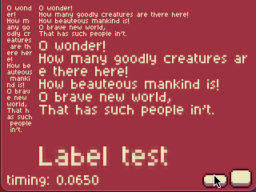
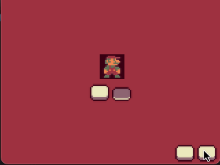
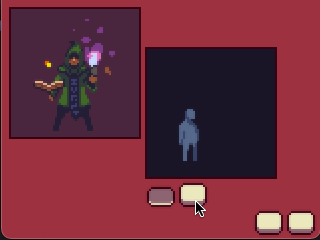
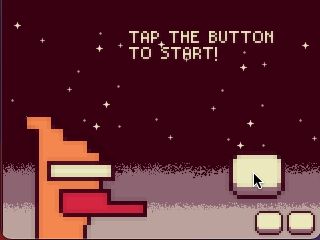

Build Status
| windows | mac | linux | emscripten | iOS | Anodroid |
|---|---|---|---|---|---|
Intro
Here comes Yet Another Portable Retro Engine(yapre)!
It is a toy project for everyone to make retro games on any platform(for now Windows, MacOS, Linux, emscripten, iOS and Android are supported) using C++ and lua.
Try the demo app in your webbrowser by typping yapre.run in your address bar!
Examples
|  |  |
|  |  |
Build
windows
mac
linux
generate ios xcode project on mac
for devices
for simulators
generate android studio project on mac
build emscripten version on mac/linux
build
test run
API
System
yapre.platform
yapre.Exit()
yapre.AddTimer(time_ms, callback_function)
Audio
yapre.Beep(freq, duration_ms)
Video
yapre.RenderSize(width, height)
yapre.SetClearColor(r, g, b, a)
yapre.DrawSprite(texture_path, x, y, z, width, height, rotate, r, g, b)
Input
yapre.BindKeyboardInputCallback(key, callback_function)
yapre.UnbindKeyboardInputCallback(key)
yapre.BindMouseInputCallback(key, callback_function)
yapre.UnbindMouseInputCallback(key)
yapre.BindTouchInputCallback(key, callback_function)
yapre.UnbindTouchInputCallback(key)